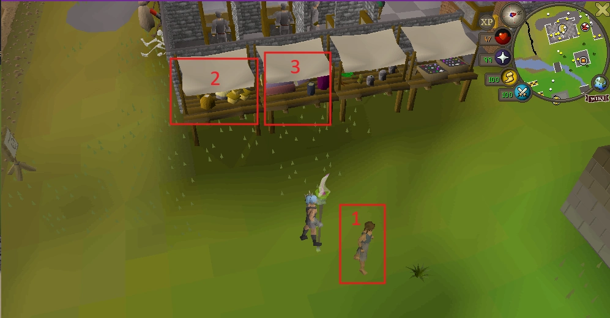
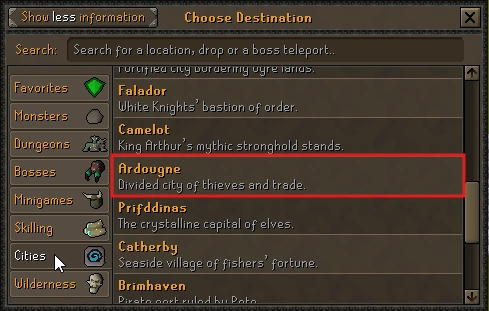
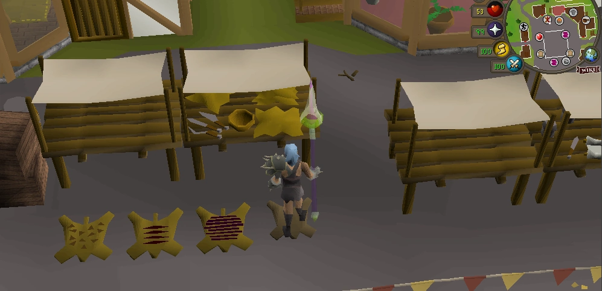
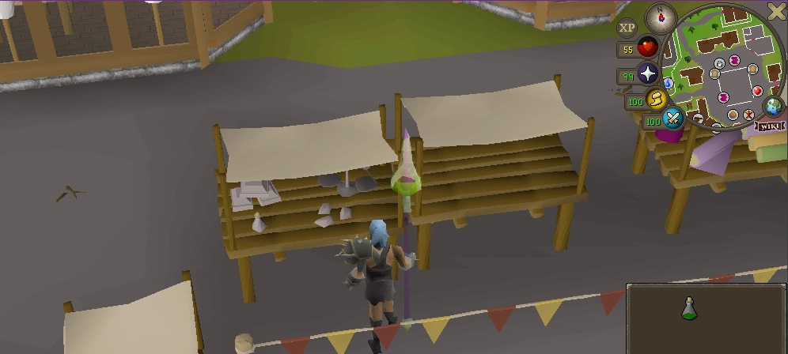
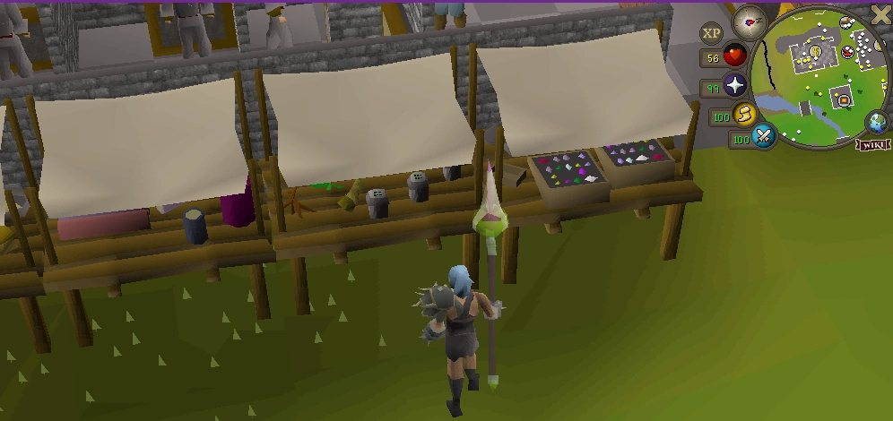
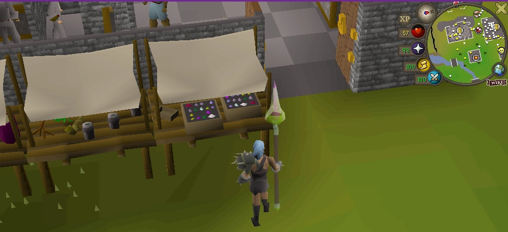
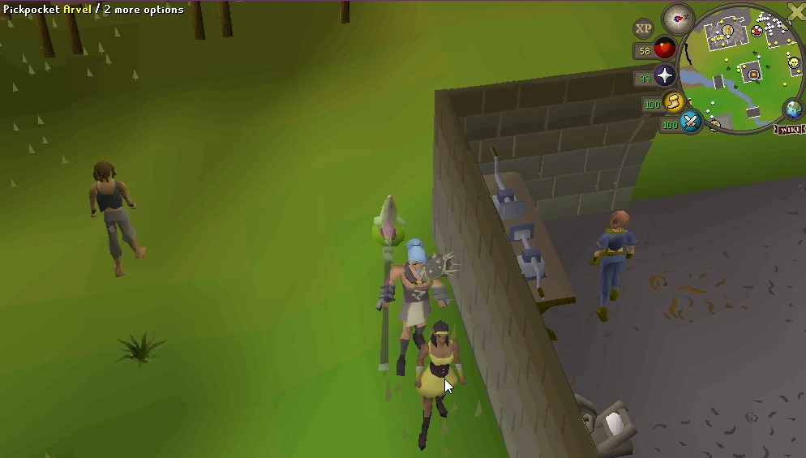

IMPACT THIEVING PROGRESSION
Impact RSPS Thieving Guide: 1–99 Levels and Locations
Train Thieving from the Man, Bakery stall and Silk stall at Home to Ardougne’s Fur and Silver stalls, then return to the high-level Home stalls, with Arvel available from level 85.
Move to the next documented method when it unlocks, but choose between the level-75 end stall and Arvel based on whether you prefer stall clicks or pickpocketing.
QUICK ANSWER
What is the Impact RSPS 1–99 Thieving route?
Use ::home, run south to the Thieving area and pickpocket the Man from levels 1–4. Use the Bakery stall from 5–19 and the Silk stall from 20–34. At 35, teleport to Ardougne for the Fur Stall, switching to the Silver Stall at 50.
Return Home at 65 for the highlighted high-level stall, then use the end stall from 75–99. Arvel is an optional pickpocket target beside the Home stalls from level 85. Guards are also documented as an optional pickpocket route from level 40 before the level-75 stage.
- Home startMan, Bakery stall and Silk stall, levels 1–34
- ArdougneFur at 35, Silver at 50
- Back to HomeHighlighted stall at 65, end stall at 75
- High-level choiceEnd stall or Arvel from level 85
The official page does not publish fixed XP, GP, loot, respawn or completion-time values. Verify current object names and rewards in game.
COMPLETE ROUTE
Impact Thieving 1–99 progression at a glance
Recommended progression based on the current official unlocks. The ranges below do not overlap: each one ends immediately before the next documented unlock.
Man
Run south from ::home to the Thieving area outside Edgeville Bank. The Bakery stall unlocks at 5.
Bakery stall
Steal from the Bakery stall at marker 2 until the Silk stall becomes available at level 20.
Silk stall
Use the Silk stall at marker 3 until the Fur Stall route unlocks at level 35.
Fur Stall
Use the Spiritual Fairy Tree to Ardougne. The stall is south of the teleport; Silver unlocks at 50.
Silver Stall
Find it north of the Ardougne teleport. Return Home when the next documented stall unlocks at 65.
Highlighted Home stall
The player-supplied image shows the expected Spice-stall area, while the official text identifies the target only by position.
End stall at Home
The supplied image shows the Gem-stall tray. The official route calls it the stall on the end and confirms it remains viable to 99.
Arvel alternative
Pickpocket Arvel beside the Home stalls. Choose this or remain at the end stall; no official comparison rate is published.
LEVELS 1–34
Levels 1–34: Thieving at Impact Home
Use ::home and run south to the Thieving area outside Edgeville Bank. Start by pickpocketing the Man, then follow the numbered stalls only when their requirements unlock.
- 1Pickpocket the Man from levels 1–4.
- 2Steal from the Bakery stall from levels 5–19.
- 3Steal from the Silk stall from levels 20–34.
- 4At 35, use the tree to travel to Ardougne.

Man
Levels 1–4
Pickpocket the Man at the Home Thieving area until the Bakery stall unlocks.
Bakery stall
Levels 5–19
Steal from the Bakery stall until the Silk stall becomes available at level 20.
Silk stall
Levels 20–34
Use the Silk stall until the Fur Stall route unlocks at level 35.
TRAVEL ROUTE
How to teleport to Ardougne
- 01
Return Home
Use
::home. - 02
Use the tree
Open the Spiritual Fairy Tree in the centre of Home.
- 03
Open Cities
Choose the Cities category shown in the current supplied interface.
- 04
Select Ardougne
Choose the highlighted Ardougne destination.
- 05
Orient at the market
Fur is south of the teleport; Silver is north.
- 06
Check the target
Confirm the displayed object name before using “Steal-from.”

::home, open Cities and select Ardougne.ARDOUGNE • UNLOCK 35
Levels 35–49: Fur Stall
Teleport to Ardougne and move south from the arrival point. Use the object named Fur Stall and continue until the Silver Stall unlocks at level 50.
- Action: steal from the Fur Stall manually.
- Location: Ardougne, south of the teleport.
- Next unlock: Silver Stall at level 50.
- Not documented: loot, respawn, guards, stun and inventory behavior.

ARDOUGNE • UNLOCK 50
Levels 50–64: Silver Stall
Move north of the Ardougne teleport and locate the Silver Stall. Train here until level 65, when the official route sends you back Home.
- Action: steal from the Silver Stall manually.
- Location: Ardougne, north of the teleport.
- Next unlock: highlighted high-level Home stall at 65.
- Loot note: the screenshot does not establish a permanent reward table.

HOME • UNLOCK 65
Levels 65–74: highlighted Home stall
Return to ::home at level 65 and use the high-level stall highlighted in the official route. The supplied current screenshot shows the expected Spice-stall area, but the Wiki text identifies the target by position rather than confirming that semantic name.
If the in-game hover label has changed, follow the highlighted position and verify the interaction before continuing. The end stall unlocks at 75.

HOME • UNLOCK 75
Levels 75–99: end stall at Home
Use the stall on the end of the Home row from level 75. The supplied screenshot shows its coloured-gem tray, while the current official page describes it by position rather than explicitly naming it Gem Stall.
The official guide confirms that this stall route remains viable through level 99. At level 85, compare its stall-click rhythm with manual Arvel pickpocketing; neither option has a published comparative XP or profit rate.

HOME • OPTIONAL FROM 85
Levels 85–99 alternative: pickpocket Arvel
Arvel stands beside the Thieving stalls at Home. He is not an Ardougne target. From level 85, you can manually pickpocket him instead of remaining at the level-75 end stall.
Continue the end stall
- Available from 75.
- Documented as viable to 99.
- Stall-based interaction.
Switch to Arvel
- Available from 85.
- Located beside the Home stalls.
- Caught chance is documented, but no rate or stun duration is given.

INTERACTIVE UTILITY
Thieving Level Planner
Enter a whole level to find the current documented target, travel route, next unlock and any relevant alternative. The full route above remains available without JavaScript.
METHOD DIRECTORY
Stall and NPC comparison
| Levels | Target | Method | Location | How to get there | Recommended until | Notes |
|---|---|---|---|---|---|---|
| 1–4 | Man | Pickpocket | Home | ::home, run south | Level 5 | Marker 1 |
| 5–19 | Bakery stall | Steal from | Home | Marker 2 | Level 20 | Starter stall |
| 20–34 | Silk stall | Steal from | Home | Marker 3 | Level 35 | Starter stall |
| 35–49 | Fur Stall | Steal from | Ardougne | South of teleport | Level 50 | Officially named |
| Optional from 40 | Guards | Pickpocket | Not specified | Verify in game | Optional branch | Official endpoint wording conflicts |
| 50–64 | Silver Stall | Steal from | Ardougne | North of teleport | Level 65 | Officially named |
| 65–74 | Highlighted high-level stall | Steal from | Home | ::home, stall row | Level 75 | Often identified visually as Spice; Wiki uses position |
| 75–99 | End stall | Steal from | Home | ::home, end of stall row | Level 99 | Coloured-gem tray; Wiki uses position |
| Optional from 85 | Arvel | Pickpocket | Home | Beside the stalls | Level 99 | Optional alternative |
PRACTICAL SESSION CONTROL
Inventory and banking tips for Thieving
Start with space
Use an empty or mostly empty inventory until you confirm whether the current reward stacks or occupies slots.
Watch the live behavior
The official page does not document banking, stacking or full-inventory behavior. Let the current client decide when to bank.
Confirm the target name
Hover the NPC or object before interacting so a neighbouring decorative market object does not waste clicks.
Compare equal sessions
When choosing between the end stall and Arvel, test equal manual session lengths rather than relying on an invented hourly rate.
AVOID ROUTE ERRORS
Common Thieving mistakes
Wrong Home target
Use the Man first, then the Bakery stall at marker 2 and Silk stall at marker 3 when their requirements unlock.
Wrong high-level location
Fur and Silver are in Ardougne; the level-65 and level-75 stalls and Arvel are at Home.
Assuming a universal best
The official guide does not establish that the end stall always beats Arvel or that Arvel is always faster.
Inventing OSRS mechanics
Do not assume standard loot, guards, stun, respawn or XP values apply to Impact without current confirmation.
Ignoring inventory capacity
Observe whether current rewards use inventory space and bank before the client prevents further actions.
Automating the loop
Bots, scripts, macros and AHK are prohibited. Keep repetitive clicks manual and attended.
1–99 SESSION PLAN
Impact Thieving checklist
- Check your current Thieving level.
- Use
::homefor the starter route. - Confirm the correct NPC or stall position.
- Move to the next method when its requirement unlocks.
- Use the Spiritual Fairy Tree to reach Ardougne at 35.
- Use Fur from 35 and Silver from 50.
- Return Home at 65 for the high-level stall row.
- Use the end stall from 75.
- At 85, compare the end stall with Arvel.
- Train manually and verify current mechanics in game.
FAQ
Impact Thieving questions
Where do I start Thieving in Impact RSPS?
Start at Home by using ::home and running south to the Thieving area outside Edgeville Bank. Pickpocket the Man at level 1.
What should I pickpocket at level 1?
Pickpocket the Man from levels 1–4. The Bakery stall unlocks at level 5.
Which stalls should I use before level 35?
Use the Bakery stall from levels 5–19, then the Silk stall from levels 20–34. The Fur Stall route begins at level 35.
How do I teleport to Ardougne?
Return to ::home, use the Spiritual Fairy Tree, open Cities and select Ardougne. The supplied current interface screenshot confirms the Cities label.
What level unlocks the Fur stall?
The Fur Stall unlocks at level 35. It is south of the Ardougne teleport and is the documented route through level 49.
What level unlocks the Silver stall?
The Silver Stall unlocks at level 50. It is north of the Ardougne teleport and is the documented route through level 64.
Can I use the Gem stall until level 99?
Yes. The official guide says the level-75 end stall at Home remains viable through level 99, with Arvel available as an optional pickpocketing route from level 85.
Who is Arvel?
Arvel is the documented level-85 pickpocketing target beside the Thieving stalls at Home.
What level can I pickpocket Arvel?
Arvel unlocks at level 85 and can be used as an optional pickpocketing route through level 99.
Is Arvel better than the Gem stall?
The official Thieving guide presents the level-75 stall and Arvel as a preference choice and publishes no comparative XP or profit rate. Test both manually and use the interaction style you prefer.
Can Thieving be automated?
No. Impact’s rules prohibit bots, scripts, macros, AHK and other unauthorized automation. Every Thieving action must remain manual and attended.
Official sources, verification and disclaimer
Level requirements, rewards and mechanics can change. Verify current target names and interactions using the official Thieving page, Getting Started, Home Area, Commands, Maps, Skilling Pets and Impact rules.
This independent guide is not endorsed by Impact. Bots, scripts, macros, AHK and other unauthorized automation are prohibited.
KEEP THE ROUTE USEFUL
Check the method, then train manually
Use the planner at each unlock, verify the live object or NPC name and revisit the official page whenever the server changes.